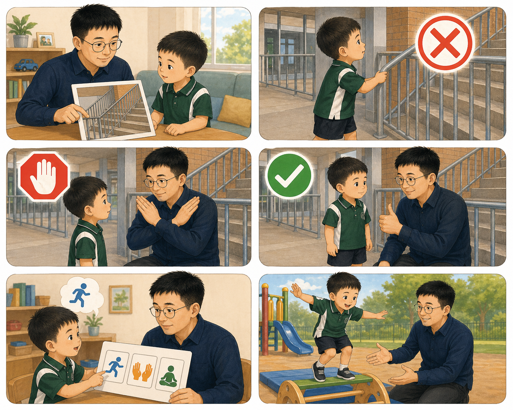
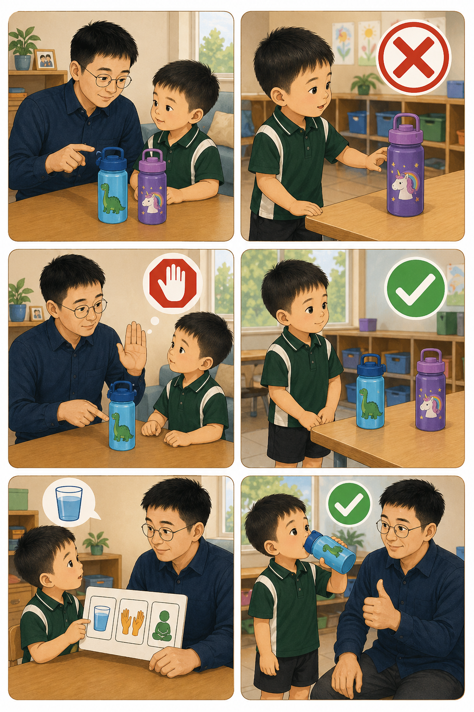
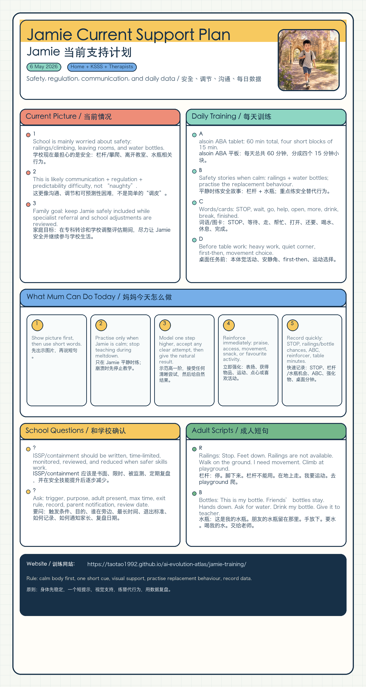

Settle + assess / 安静进入 + 评估
15 minutes to settle body, check readiness, and begin with easy wins. / 15 分钟先稳定身体、确认准备度，从容易成功的任务开始。
Kenmore South Prep Support
Jamie / Jamie
Real photo rotation / 真实照片轮换
0/0
Done / 已完成
Wordless images for pointing and matching. / 无文字图片，可用于指认和配对。

Four 15-minute tablet blocks. / 四个 15 分钟平板训练小块。
Jamie now has 60 minutes of daily alsoin ABA tablet training, split into four 15-minute blocks. The alsoin page describes the product as an AI individual-training robot with clinical evidence support from Peking University Sixth Hospital Child Mental Health Center. / Jamie 现在每天使用 alsoin ABA 平板训练 60 分钟，分为 4 个 15 分钟小块。alsoin 页面介绍其为 AI 个训机器人，并提到由北京大学第六医院儿童心理卫生中心实证支持。
15 minutes to settle body, check readiness, and begin with easy wins. / 15 分钟先稳定身体、确认准备度，从容易成功的任务开始。
15 minutes for visual matching, attention, imitation, and early learning targets. / 15 分钟做视觉配对、注意、模仿和早期学习目标。
15 minutes to practise responding, requesting, and short functional words. / 15 分钟练回应、请求和短功能词。
15 minutes to repeat successful items, end positively, and record what worked. / 15 分钟复习成功项目、积极结束，并记录有效强化物。
Railings and water-bottle cards made for Jamie. / 给 Jamie 的栏杆和水瓶安全图卡。

Replacement behaviour / 替代行为：walk on the ground and climb at the playground. / 在地面行走，需要爬时去 playground。

Replacement behaviour / 替代行为：use Jamie's bottle, ask for water, or give a bottle to teacher. / 使用自己的水瓶、请求喝水，或把水瓶交给老师。
Meeting follow-up, ISSP questions, and home-school consistency. / 会议后跟进、ISSP 问题和家校一致。
Keep Jamie safe, regulated, and included at school while the family, school, therapists, and specialist use data to refine supports. / 在家庭、学校、治疗师和专科医生用数据优化支持时，尽最大可能让 Jamie 安全、稳定并继续参与学校生活。
Practise STOP, feet down, walk on ground, hands down, and give to teacher before high-risk moments. / 在高风险情境前练 STOP、脚下来、地面走、手放下、交给老师。
Use heavy work, quiet corner, first-then, and movement choices before table tasks or transitions. / 桌面任务或转换前先用本体觉活动、安静角、first-then 和运动选择。
Climb at playground, ask water, drink my bottle, ask help/open, break, more, go, finished. / 去 playground 爬、请求喝水、喝自己的水、请求帮忙/打开、休息、还要、开始、完成。
Record ABC: what happened before, what Jamie did, what happened after, and what need it may show. / 记录 ABC：前面发生什么、Jamie 做了什么、之后发生什么、可能表达什么需求。
ISSP / containment 要问清楚：
Railings / 栏杆： Stop. Feet down. Railings are not available. Walk on the ground. I need movement. Climb at playground.
Bottles / 水瓶： This is my bottle. Friends' bottles stay. Hands down. Ask for water. Drink my bottle. Give it to teacher.
Policy links for parents / 家长参考：Restrictive practices, Student discipline, Students with disability.
One-page bilingual summary of the current plan. / 当前方案的一页中英文总结。
